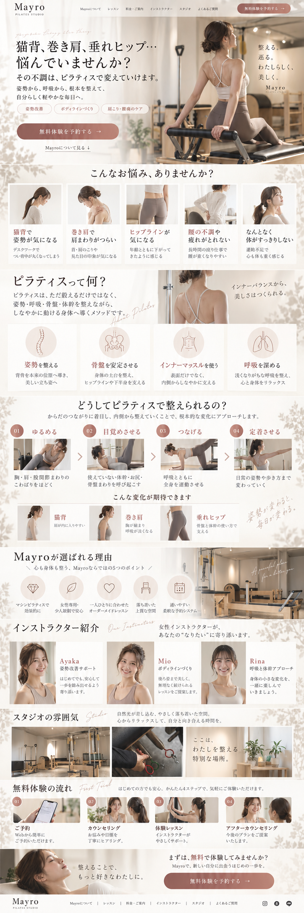

DESIGN REVIEW
変更2と参考画像を見比べる
写真や文字を含む構成を点検し、変更1から調整しました。
デザイン自己評価90 / 100
目視と構成の評価。
画像の一致率を測定した数字ではありません。
背景は維持。写真とレイアウトを参考に戻しました。
写真付きのお悩み5項目、図解付きの4項目、写真で見せる横並びの4ステップ、5つの理由、スタジオの3列構成、無料体験の4ステップを反映しています。
残る主な差：人物写真は同一ではありません。スタッフは公式情報に合わせて2名とし、Shokoさんは写真を補作せず名前のカードにしています。葉影の装飾は、背景の方向性を保つため控えています。
項目別の評価と残っている違いを見る
| 項目 | 評価 | 反映した点・残る違い |
|---|---|---|
| セクションの順番 | 10 / 10 | トップ → 悩み → 説明 → 4ステップ → 理由 → スタッフ → スタジオ → 体験 → 予約。 |
| トップ | 9 / 10 | 左コピー・右人物・右上の縦積みコピー。写真のポーズと予約ボタンの色は異なる。 |
| 悩みの5カード | 9 / 10 | 5枚の写真と短い見出しを横並びに復元。写真は新たなイメージ素材。 |
| ピラティス説明 | 9 / 10 | 左右の導入と4つの図解を復元。人物の構図は若干異なる。 |
| レッスンの4ステップ | 10 / 10 | 番号・見出し・写真・説明・矢印を横並びにし、下段に3つの変化を配置。 |
| 選ばれる理由 | 9 / 10 | 5つのアイコンと右側のスタジオ写真。写真は実店舗のものを使用。 |
| インストラクター | 6 / 10 | 参考の3名から公式情報の2名へ変更。Shokoさんの写真未掲載が最も大きな差。 |
| スタジオ | 9 / 10 | 写真・器具・メッセージの3列を復元。実際のスタジオ写真を使用。 |
| 無料体験と予約 | 10 / 10 | 4枚の写真カードと横長の締めの予約欄を復元。 |
| 密度・余白 | 9 / 10 | PCでの縦横比は参考3.00に対して約3.10。縦の長さの差を約3.4%に抑えた。 |
| 合計 | 90 / 100 | 自己評価の目安。完全一致ではありません。 |
同じ幅で比較
スマートフォンでは左右に並べず、上下に表示します。
参考画像（2枚目）

変更2
トップ・お悩み・レッスン・体験の人物写真はイメージ素材です。図解などには提供された参考画像の一部を表示しています。